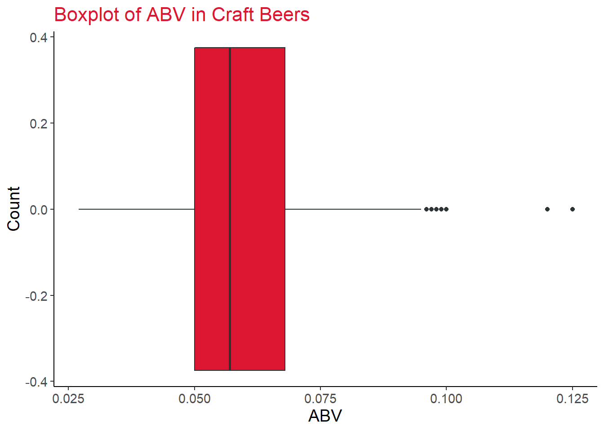
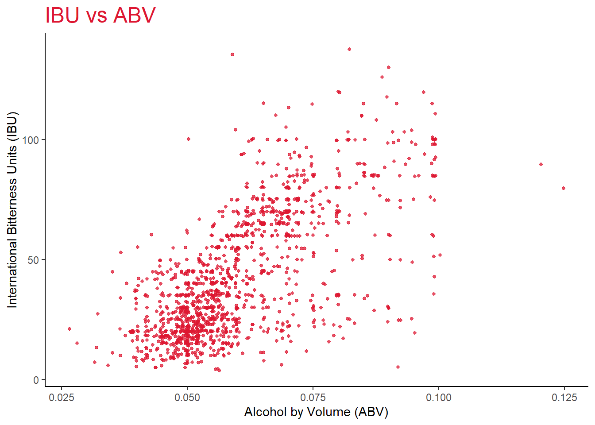

Beer and brewery location data was provided to us for a number of craft breweries in the United States. We combined this data and performed several exploratory data analysis procedures, which are presented below. Through the analysis, we have found a statistically significant difference between IBU values in the West and Midwest regions, and have also identified a potential new market for German beers.
knit_print.data.frame <- lemon_print# load brewery data CSV file
brew <- read.csv('Breweries.csv', encoding = 'UTF-8') %>%
# trim white space around the state abbreviation
mutate(State=str_trim(State))
# load beer data from CSV file
beer <- read.csv('Beers.csv', encoding = 'UTF-8')
# load city, state geolocation data from csv file
cities <- read.csv('Cities.csv') %>% select(-COUNTY) %>%
rename(CITY_LAT=LATITUDE, CITY_LON=LONGITUDE)
# merge beer and brewery datasets
bb = merge(beer, brew, by.x ="Brewery_id", by.y = "Brew_ID")
colnames(bb)[2] = "Beer_Name"
colnames(bb)[8] = "Brewery_Name"
theme_set(theme_classic())
# create train-test splitting function
train_test_split = function(df, splitPerc){
# Function that splits dataframe into a training set and test set based on specified split proportion
# Params:
# df: (data.frame) Raw dataframe that will be split
# splitPerc: (int) Percentage of raw data to be placed into training set
# Output
# (list) Returns a list of two dataframe objects. First one being the training set and second test set
trainIndices = sample(1:dim(df)[1], round(splitPerc * dim(df)[1]))
train = df[trainIndices,]
test = df[-trainIndices,]
return(list(train, test))
}How many breweries are present in each state?
# change the state column from a <chr> to a <fctr> and count the breweries
breweries_by_state <- bb %>%
group_by(State) %>%
summarize(n=n_distinct(Brewery_Name))
# create bar chart of breweries by state
breweries_by_state %>%
ggplot(aes(x=reorder(State, n), y=n)) +
# add lines for lollipop chart
geom_segment(aes(xend=State, yend=0), color='#bdc3c7') +
# add points for lollipop chart
geom_point(size=3, color='#DD1731') +
# flip bars from x to y axis
coord_flip() +
# add title, x-axis, and y-axis label
labs(x='', y='', title='Number of Breweries by State') +
# remove background and format text
theme(
panel.background = element_blank(),
panel.grid.major=element_blank(),
panel.grid.minor=element_blank(),
plot.title = element_text(size=28, color='#DD1731'),
axis.text=element_text(size=12),
axis.title=element_text(size=20)
)The state with the most breweries is Colorado with a count of 46, followed by California with 39. The states with the least number of breweries are Washington DC, North Dakota, South Dakota, and West Virginia, with only 1 each.
To address the missing values, we first need to find which columns have missing values.
# display any NA values across all features
bb %>%
summarise(across(everything(), ~ sum(is.na(.x)))) %>%
gather(Column, NA_Count) %>%
ggplot(aes(x=NA_Count, y=Column, fill = Column)) +
geom_col(fill='#DD1731') +
labs(
title='Percentages of Missing Values',
y='Column Name',
x='Number of Missing Values'
) +
# remove background and format text
theme(
legend.position = 'none',
plot.title = element_text(size=18, color='#DD1731'),
panel.background = element_blank(),
panel.grid.major=element_blank(),
panel.grid.minor=element_blank(),
) Only the ABV and IBU columns have missing values. In this case, we will remove them from further analysis.
# only ABV missing values removed
bb_clean_ABV <- bb %>% filter(!is.na(ABV))
# only IBU missing values removed
bb_clean_IBU <- bb %>% filter(!is.na(IBU))
# both ABV and IBU missing values removed
bb_clean <- bb %>% filter(!is.na(ABV) & !is.na(IBU))To analyze the data, we made multiple copies of the datasets for situations where we analyze only IBU, only ABV, or a combination of IBU and ABV.
Compute the median ABV and IBU for each state and compare the results using a bar chart.
# calculate median values by state and store in dataframe
med_ABV = bb_clean_ABV %>%
group_by(State)%>%
summarise(MedianABV=median(ABV))
med_IBU = bb_clean_IBU %>%
group_by(State)%>%
summarise(MedianIBU=median(IBU))
# start with the cleaned dataframe
bb_clean %>%
# group by the state
group_by(State) %>%
# add statistics for the median ABV and median IBU
summarize('ABV (Median)'=median(ABV), 'IBU (Median)'=median(IBU)) %>%
# gather new columns into key-value pairs
gather(statistic, val, c('ABV (Median)', 'IBU (Median)')) %>%
# create plot to compare median ABV and IBU values between states
ggplot(aes(x=reorder(State, val), y=val)) +
# add bar geometry to the plot
# geom_bar(stat='identity', fill='#DD1731', width=0.6, alpha=0.8) +
# add lines for lollipop chart
geom_segment(aes(xend=State, yend=0), color='#bdc3c7') +
# add points for lollipop chart
geom_point(size=3, color='#DD1731') +
# flip the bars to be horizontal
coord_flip() +
# create separate facets for the measurements
facet_wrap(~statistic, nrow=1, scales='free') +
# remove background and format text
theme(
legend.position = 'none',
plot.title = element_text(size=24, color='#DD1731'),
panel.background = element_blank(),
panel.grid.major=element_blank(),
panel.grid.minor=element_blank(),
axis.text=element_text(size=12),
axis.title=element_text(size=20)
) +
# add plot title, x, and y labels
labs(
title='Median ABV and IBU by State',
x='State',
y='Measurement Value'
)The states with the largest median ABV value are Kentucky and Washington DC with a value of 0.0625. Utah has the lowest median ABV with a value of 0.04.
The state with the largest median IBU is Maine with a value of 61. Wisconsin has the lowest median IBU with a value of 19.
Calculate the maximum ABV and IBU for each state and store the results in a new dataset.
# set a constant for the graphical display
n <- 12
# find the maximum ABV and IBU values for each state and store in dataframe
max_ABV = bb_clean_ABV %>%
group_by(State)%>%
summarise(MaxABV=max(ABV))
max_IBU = bb_clean_IBU %>%
group_by(State)%>%
summarise(MaxIBU=max(IBU))
max_ABV %>% arrange(desc(MaxABV))## # A tibble: 51 x 2
## State MaxABV
## <chr> <dbl>
## 1 CO 0.128
## 2 KY 0.125
## 3 IN 0.12
## 4 NY 0.1
## 5 CA 0.099
## 6 ID 0.099
## 7 MA 0.099
## 8 ME 0.099
## 9 MI 0.099
## 10 MN 0.099
## # ... with 41 more rowsThe state with the largest maximum ABV is Colorado with a value of 0.128. The state with the smallest maximum ABV is Delaware with a value of 0.055.
# plot maximum ABV by state
max_ABV %>%
arrange(desc(MaxABV)) %>% head(n) %>%
ggplot(aes(x=reorder(State, MaxABV), y=MaxABV)) +
geom_bar(stat='identity', fill='#DD1731', width=0.6) +
gghighlight(State == 'CO') +
# flip the bars to be horizontal
coord_flip() +
# remove background and format text
theme(
plot.title = element_text(size=22, color='#DD1731'),
panel.background = element_blank(),
panel.grid.major=element_blank(),
panel.grid.minor=element_blank(),
axis.text=element_text(size=12),
axis.title=element_text(size=20)
) +
# add plot title, x, and y labels
labs(
title=paste('Top', n, 'Maximum ABV Values by State', sep=' '),
x='State',
y='ABV (Max.)'
)The State with the largest max IBU is Oregon with a value of 138. The state with the smallest max IBU is Arkansas.
# plot maximum ABV by state
max_IBU %>%
arrange(desc(MaxIBU)) %>% head(n) %>%
ggplot(aes(x=reorder(State, MaxIBU), y=MaxIBU)) +
geom_bar(stat='identity', fill='#DD1731', width=0.6) +
gghighlight(State == 'OR') +
# flip the bars to be horizontal
coord_flip() +
# remove background and format text
theme(
plot.title = element_text(size=22, color='#DD1731'),
panel.background = element_blank(),
panel.grid.major=element_blank(),
panel.grid.minor=element_blank(),
axis.text=element_text(size=12),
axis.title=element_text(size=20)
) +
# add plot title, x, and y labels
labs(
title=paste('Top', n, 'Maximum IBU Values by State', sep=' '),
x='State',
y='IBU (Max.)'
)We will analyze the ABV values of all beers using a statistical summary, boxplot, and histogram.
# calculate summary statistics for ABV values
summary(bb_clean$ABV)## Min. 1st Qu. Median Mean 3rd Qu. Max.
## 0.02700 0.05000 0.05700 0.05991 0.06800 0.12500# create boxplot of ABV values
bb_clean %>%
ggplot(aes(x=ABV)) +
geom_boxplot(color='#2d3436', fill='#DD1731') +
# remove background and format text
theme(
plot.title = element_text(size=16, color='#DD1731'),
panel.background = element_blank(),
panel.grid.major=element_blank(),
panel.grid.minor=element_blank(),
axis.text=element_text(size=11),
axis.title=element_text(size=14)
) +
# add plot title, x, and y labels
labs(
title=paste('Boxplot of ABV in Craft Beers'),
x='ABV',
y='Count'
)
# create histogram of ABV values
bb_clean %>%
ggplot(aes(x=ABV)) +
geom_histogram(bins=30, color='white', fill='#DD1731') +
# remove background and format text
theme(
plot.title = element_text(size=18, color='#DD1731'),
panel.background = element_blank(),
panel.grid.major=element_blank(),
panel.grid.minor=element_blank(),
axis.text=element_text(size=12),
axis.title=element_text(size=16)
) +
# add plot title, x, and y labels
labs(
title=paste('Distribution of ABV in Craft Beers'),
x='ABV',
y='Count'
)The ABV data is right skewed with mean at 0.05991 and 75% of the data is contained in the range of 0.050 to 0.068.
We will use a scatter plot to investigate if there is an apparent relationship between the bitterness of the beer and its alcoholic content.
# create a scatter plot of ABV and IBU
bb_clean %>% ggplot(aes(x=ABV, y=IBU)) +
geom_point(position = "jitter", size = 1, alpha=0.75, col = "#DD1731") +
# remove background and format text
theme(
legend.position = 'none',
plot.title = element_text(size=18, color='#DD1731'),
panel.background = element_blank(),
panel.grid.major=element_blank(),
panel.grid.minor=element_blank()
) +
# add axis titles
labs(
title='IBU vs ABV',
x='Alcohol by Volume (ABV)',
y='International Bitterness Units (IBU)',
)
There does appear to be a positive linear relationship between ABV and IBU. After further statistical analysis there is overwhelming evidence to suggest that there is a positive linear relationship between ABV and IBU.(P <2E-16). We are 95% confident that the population slope is contained in the interval (1244, 1320). The equation for the relationship is IBU = 1282*ABV - 34. Lastly, the R^2 for this relationship is 0.45 which means that ABV helps explain about 45% of the variation in IBU so, while there is a linear relationship present, it is not a strong linear relationship.
Below is a plot of the linear model.
# create a scatter plot of ABV and IBU with linear model
bb_clean %>% ggplot(aes(x=ABV, y=IBU)) +
# add a jitter to the points to view overlapping data
geom_jitter(size=1, alpha=0.75, color='#DD1731') +
# add a trend line to the data
geom_smooth(formula='y~x', method='lm', color='#2c3e50') +
# remove background and format text
theme(
legend.position = 'none',
plot.title = element_text(size=18, color='#DD1731'),
panel.background = element_blank(),
panel.grid.major=element_blank(),
panel.grid.minor=element_blank()
) +
# add axis titles
labs(
title='IBU vs ABV with Linear Model Trendline',
x='Alcohol by Volume (ABV)',
y='International Bitterness Units (IBU)',
)The data was split into training, validation, and test sets in a 80/10/10 split. After some parameter tuning, we found the optimal K for this data set to be 23. The classification report for the model is shown below.
# The information on beer type is contained within the "Style" column
# We will Use regex to make two new data sets: one for IPA styles and one for
# any other type of ale. Make sure that
# we are specifically selecting what we want. May involve some repetitive checking.
bb_ale = bb_clean %>%
filter(
str_detect(bb_clean$Style, regex("\\bale\\b", ignore_case = TRUE)) &
!str_detect(bb_clean$Style, regex("\\bipa\\b", ignore_case = TRUE)))
bb_ipa = bb_clean %>%
filter(str_detect(bb_clean$Style, regex("\\bipa\\b", ignore_case = TRUE)))
# add a new column in both dataframes specifying type
bb_ale = bb_ale %>% mutate(AleType = "NON IPA ALE")
bb_ipa = bb_ipa %>% mutate(AleType = "IPA")
# combine the dataframes
bb_ales = rbind(bb_ale, bb_ipa)
# set "AleType" column to be a factor
bb_ales$AleType = as.factor(bb_ales$AleType)
# select desired data
bb_knn = bb_ales %>% select(ABV, IBU, AleType)
# specify features and targets for the KNN classifier
features = c("ABV", "IBU")
target = c("AleType")
# normalize data Using z-score standardization
bb_knn_norm = bb_knn
bb_knn_norm$ABV = (bb_knn_norm$ABV - mean(bb_knn_norm$ABV))/sd(bb_knn_norm$ABV)
bb_knn_norm$IBU = (bb_knn_norm$IBU - mean(bb_knn_norm$IBU))/sd(bb_knn_norm$IBU)
# split Data
tt_l = train_test_split(bb_knn_norm, splitPerc = 0.9)
train_data = tt_l[[1]]
test_data = tt_l[[2]]
train_fea = train_data %>% select(contains(features))
train_tar = train_data %>% select(contains(target))
test_fea = test_data %>% select(contains(features))
test_tar = test_data %>% select(contains(target))
# train / test model
clsf_rep = knn(train_fea[,], test_fea[,], train_tar[,], k=23, prob = T)
# model analysis
CM_rep = confusionMatrix(table(clsf_rep, test_tar[,]))
CM_rep## Confusion Matrix and Statistics
##
##
## clsf_rep IPA NON IPA ALE
## IPA 32 8
## NON IPA ALE 7 47
##
## Accuracy : 0.8404
## 95% CI : (0.7505, 0.9078)
## No Information Rate : 0.5851
## P-Value [Acc > NIR] : 9.51e-08
##
## Kappa : 0.6725
##
## Mcnemar's Test P-Value : 1
##
## Sensitivity : 0.8205
## Specificity : 0.8545
## Pos Pred Value : 0.8000
## Neg Pred Value : 0.8704
## Prevalence : 0.4149
## Detection Rate : 0.3404
## Detection Prevalence : 0.4255
## Balanced Accuracy : 0.8375
##
## 'Positive' Class : IPA
## The good performance of this model implies that there is a well defined clustered relationship between these two types of ale. Below is a plot visualizing the relationship.
# scatter plot with class color distinction
bb_knn_norm %>% ggplot(aes(x=ABV, y=IBU, color=AleType)) +
geom_point() +
# remove background and format text
theme(
plot.title = element_text(size=18, color='#DD1731'),
panel.background = element_blank(),
panel.grid.major=element_blank(),
panel.grid.minor=element_blank()
) +
# add axis titles
labs(
title='IBU vs ABV Colored by Class',
x='Normalized Alcohol by Volume (ABV)',
y='Normalized International Bitterness Units (IBU)',
)We will create additional data for brewery regions by manually labeling state to region relationships.
# create region vectors
west = c("WA", "OR", "CA", "NV", "UT", "CO", "WY", "MT", "ID")
midwest = c("ND", "SD", "NE", "KS", "MN", "IA", "MO", "WI", "MI", "IL", "IN", "OH")
southwest = c("AZ", "NM", "OK", "TX")
southeast = c("MD", "DE", "WV", "VA", "KY", "TN", "NC", "SC", "GA", "AL", "MS", "AR", "LA", "FL", "DC")
northeast = c("PA", "NJ", "NY", "CT", "RI", "VT", "MA", "NH", "ME")
hawaii_alaska = c("HI", "AK")
# create a new ale dataframe with additional region feature
bb_clean_eda2_ales = bb_ales %>%
mutate(Region = case_when(
is.element(State, west) ~ "West",
is.element(State, midwest) ~ "Midwest",
is.element(State, southwest) ~ "Southwest",
is.element(State, southeast) ~ "Southeast",
is.element(State, northeast) ~ "Northeast",
is.element(State, hawaii_alaska) ~ "Other"
))
#Ale Production Difference
bb_clean_eda2_ales %>%
group_by(Region, AleType) %>%
summarise(AleType_Count = n()) %>%
ggplot(aes(x = Region, y = AleType_Count, fill=AleType)) +
geom_col(position="dodge") +
ylab("Ale Type Count") + ggtitle("Ale Type Count by Region")## `summarise()` has grouped output by 'Region'. You can override using the `.groups` argument.To further expand on the ale type analysis briefly here is the production count by region for IPA versus non IPA ales. Most regions appear to prefer more of the non IPA ales but the north east region is the one exception where IPA is ahead by just a bit.
Earlier we looked into the distribution of ABV and IBU across the entire data set but now we will do a similar analysis by region. The plan is to do an analysis of variance across all regions to see if there distributions are all the same or if there is evidence of a difference.
# create a new dataframe with the "bb_clean" dataset and added region feature
bb_clean_eda2 = bb_clean %>%
mutate(Region = case_when(
is.element(State, west) ~ "West",
is.element(State, midwest) ~ "Midwest",
is.element(State, southwest) ~ "Southwest",
is.element(State, southeast) ~ "Southeast",
is.element(State, northeast) ~ "Northeast",
is.element(State, hawaii_alaska) ~ "Other"
))
#AOV for ABV
fit_eda2_ABV = aov(ABV~Region, data=bb_clean_eda2)
summary(fit_eda2_ABV)## Df Sum Sq Mean Sq F value Pr(>F)
## Region 5 0.00215 0.0004303 2.346 0.0393 *
## Residuals 1399 0.25663 0.0001834
## ---
## Signif. codes: 0 '***' 0.001 '**' 0.01 '*' 0.05 '.' 0.1 ' ' 1From the analysis of variance test there was weak evidence to suggest that at least two of the regions mean ABV are different from each other.(P = 0.0393).
# AOV for IBU
fit_eda2_IBU = aov(IBU~Region, data=bb_clean_eda2)
summary(fit_eda2_IBU)## Df Sum Sq Mean Sq F value Pr(>F)
## Region 5 14341 2868.1 4.308 0.000681 ***
## Residuals 1399 931413 665.8
## ---
## Signif. codes: 0 '***' 0.001 '**' 0.01 '*' 0.05 '.' 0.1 ' ' 1From the analysis of variance test there was very strong evidence to suggest that at least two of the regions mean IBUs are different from each other. (P = 0.000681)
Since we have evidence to suggest there is a difference for both ABV and IBU we will proceed with a multi-comparison analysis of the regions to find which regions are statistically different from the others.
#Tukey multi comparison for ABV
TUK_EI_ABV = HSD.test(aov(lm(ABV ~ Region, data=bb_clean_eda2)), "Region", group=F)
TUK_EI_ABV$comparison## difference pvalue signif. LCL UCL
## Midwest - Northeast 0.0005279661 0.9977 -0.002837659 0.0038935915
## Midwest - Other 0.0039545768 0.5642 -0.002878070 0.0107872241
## Midwest - Southeast -0.0011668123 0.9330 -0.004667945 0.0023343201
## Midwest - Southwest -0.0013586100 0.9228 -0.005295065 0.0025778447
## Midwest - West -0.0020026253 0.2652 -0.004667965 0.0006627138
## Northeast - Other 0.0034266106 0.7374 -0.003644656 0.0104978771
## Northeast - Southeast -0.0016947785 0.8245 -0.005641381 0.0022518237
## Northeast - Southwest -0.0018865762 0.8165 -0.006224020 0.0024508673
## Northeast - West -0.0025305915 0.2215 -0.005758869 0.0006976857
## Other - Southeast -0.0051213891 0.3158 -0.012258146 0.0020153681
## Other - Southwest -0.0053131868 0.3091 -0.012673285 0.0020469118
## Other - West -0.0059572021 0.1211 -0.012723250 0.0008088461
## Southeast - Southwest -0.0001917977 1.0000 -0.004635210 0.0042516143
## Southeast - West -0.0008358130 0.9810 -0.004205126 0.0025334996
## Southwest - West -0.0006440153 0.9968 -0.004463703 0.0031756725There is no statistically significant evidence to suggest that there is a difference in any of the populations. (P > 0.05)
#Tukey multi comparison for IBU
TUK_EI_IBU = HSD.test(aov(lm(IBU ~ Region, data=bb_clean_eda2)), "Region", group=F)
TUK_EI_IBU$comparison## difference pvalue signif. LCL UCL
## Midwest - Northeast -2.388083 0.8960 -8.799942 4.0237762
## Midwest - Other 2.533206 0.9937 -10.483683 15.5500948
## Midwest - Southeast -4.826226 0.3065 -11.496240 1.8437879
## Midwest - Southwest -1.040421 0.9987 -8.539768 6.4589265
## Midwest - West -7.349071 0.0005 *** -12.426813 -2.2713279
## Northeast - Other 4.921289 0.9035 -8.550194 18.3927715
## Northeast - Southeast -2.438143 0.9400 -9.956822 5.0805360
## Northeast - Southwest 1.347662 0.9973 -6.915610 9.6109339
## Northeast - West -4.960988 0.1939 -11.111185 1.1892091
## Other - Southeast -7.359432 0.6353 -20.955681 6.2368178
## Other - Southwest -3.573626 0.9786 -17.595364 10.4481112
## Other - West -9.882276 0.2440 -22.772287 3.0077349
## Southeast - Southwest 3.785805 0.7981 -4.679347 12.2509580
## Southeast - West -2.522845 0.8725 -8.941728 3.8960394
## Southwest - West -6.308650 0.1325 -13.585544 0.9682446There is strong evidence to suggest that there is a difference in the mean IBU between the Midwest and West regions.(P = 0.005). The other regions there was not enough evidence. (P > 0.05).
#View comparing just the Midwest and West
bb_clean_eda2 %>% filter(Region == "Midwest" | Region == "West") %>%
ggplot(aes(x=Region, y=IBU, fill=Region)) + geom_boxplot() +
stat_summary(fun=mean, colour="darkred", geom="point",
shape=18, size=3, show.legend=FALSE) +
stat_summary(fun=mean, colour="red", geom="text", show.legend = FALSE,
vjust=-0.7, aes( label=round(..y.., digits=1))) +
ggtitle("Boxplot Comparison of West and Midwest Regions") + ylab("IBU")It’s not currently clear if this difference is practically significant but we know that there is a difference and this may be worth looking into further.
We would like to analyze potential locations for Budweiser to launch traditional German beer styles. We will plot a map of brewery locations that produce German beers, and identify regions or states that could be potential customers.
A list of German beer styles was manually defined.
german_beers <- c(
'German Pilsener',
'Munich Helles Lager',
'Schwarzbier',
'Hefeweizen',
'Munich Dunkel Lager',
'Radler',
'Rauchbier',
'Dunkelweizen',
'Roggenbier',
'Kristalweizen',
'Keller Bier / Zwickel Bier'
)We can plot the brewery locations on a map if we join the city and state values and use the latitude and longitude from the “Cities” dataset.
# join geolocation to brewery data
geo_loc <- left_join(bb, cities, by=c('City'='CITY', 'State'='STATE_CODE'))From the analysis, we can see that the highlighted states in the Southeast region could be good candidates for marketing new German style beers.
# create vector of states to highlight
highlight_states <- c(
'alabama',
'georgia',
'south carolina',
'tennessee',
'louisiana',
'mississippi',
'arkansas',
'oklahoma'
)
# add a new column labeling German beers and save as variable
df_region <- geo_loc %>%
mutate(beer_region = ifelse(Style %in% german_beers, 'German', 'Others')) %>%
filter(!State %in% c('AK', 'HI')) %>%
arrange(desc(beer_region))
# create filter for German region only
df_de <- df_region %>%
filter(beer_region == 'German')
# add geographical data for mapping
us_states <- map("state", plot=FALSE, fill=TRUE) %>%
st_as_sf()
# select states to highlight
highlight <- us_states %>% filter(ID %in% highlight_states)
# create map
p <- ggplot() +
geom_sf(data=us_states, color='white', fill='lightgray') +
geom_sf(data=highlight, color='white', fill='#DD1731') +
# remove background and format text
theme(
plot.title = element_text(size=18, color='#DD1731'),
panel.background = element_blank(),
panel.grid.major=element_blank(),
panel.grid.minor=element_blank(),
panel.border=element_blank(),
axis.line=element_blank(),
axis.text=element_blank(),
axis.title=element_blank(),
axis.ticks=element_blank()
) +
labs(title='Breweries Serving German Style Beers')
# add the German beer breweries
p <- p + geom_point(data=df_de, aes(x=CITY_LON, y=CITY_LAT), color='#2d3436',
size=1.5)
# print the map
p